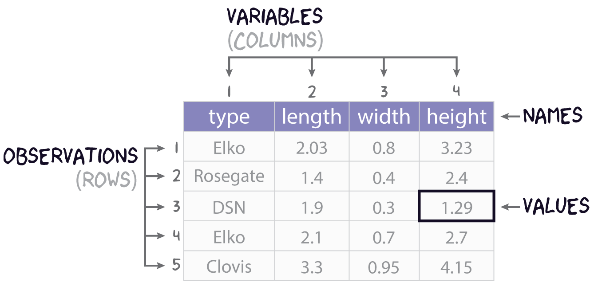
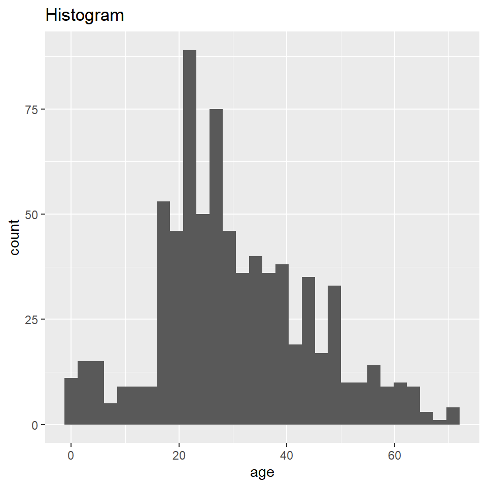
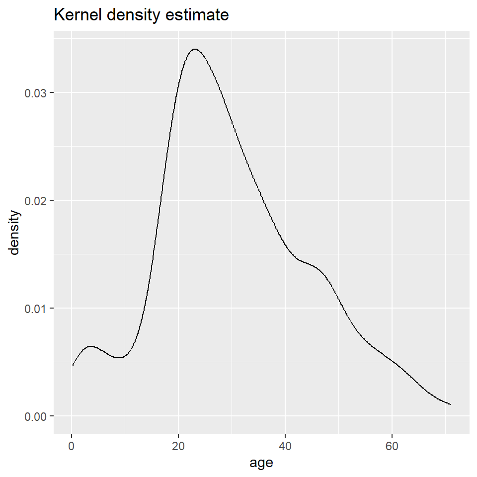
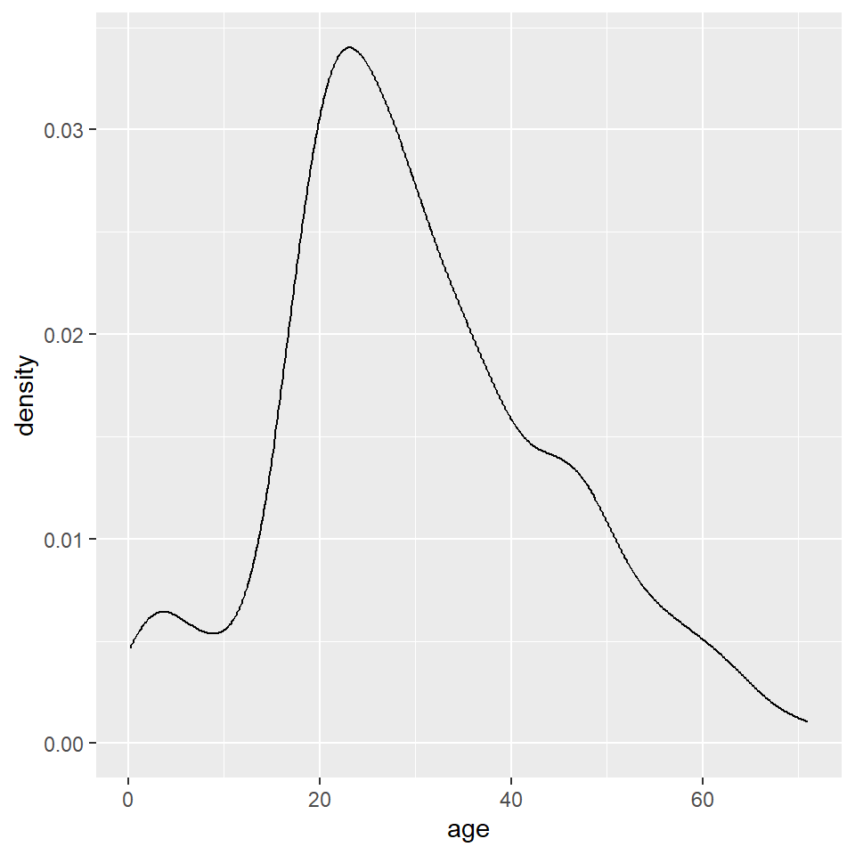
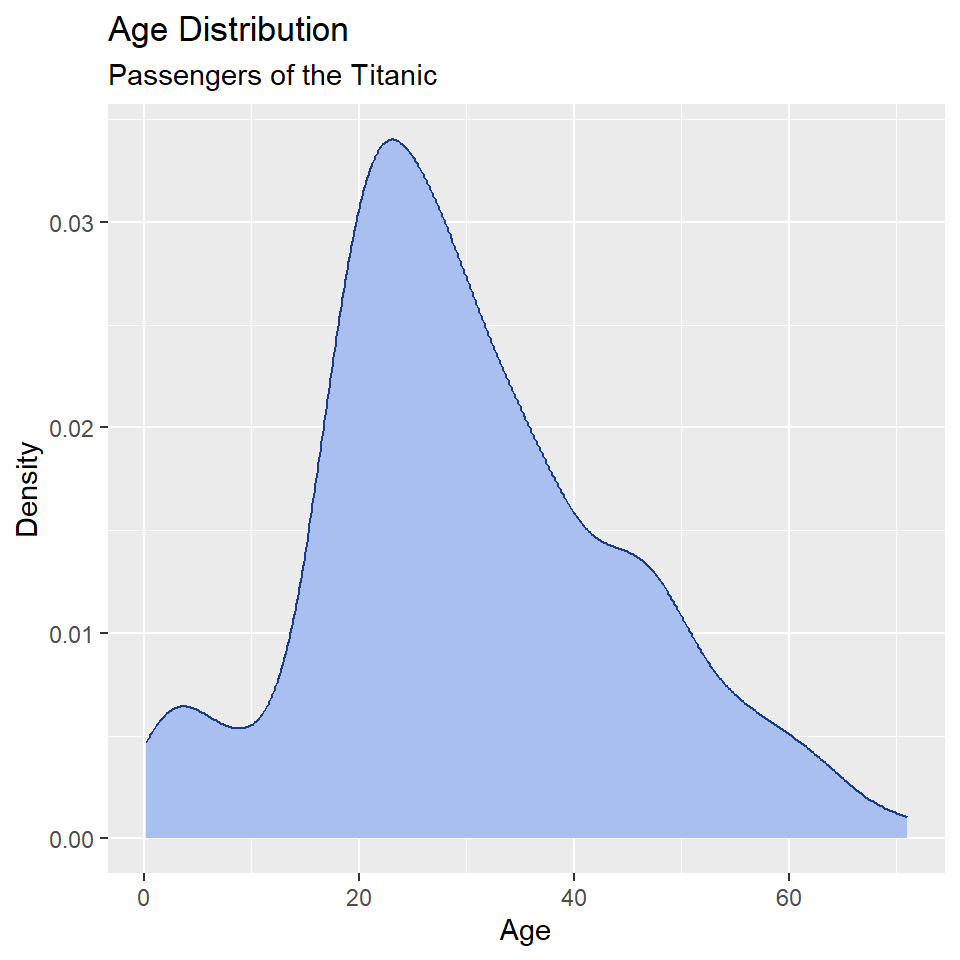
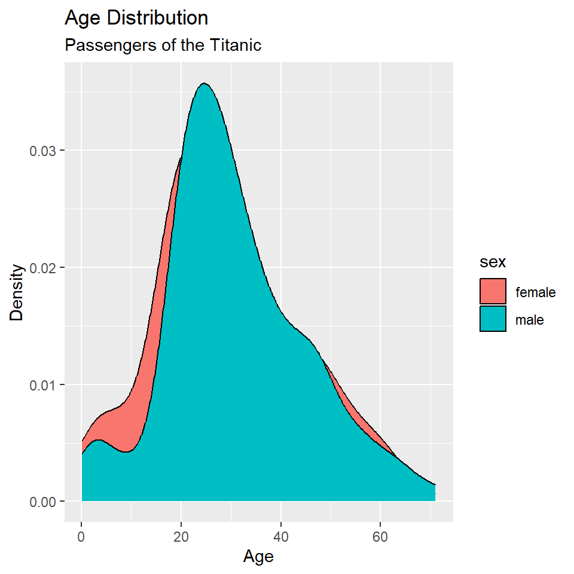
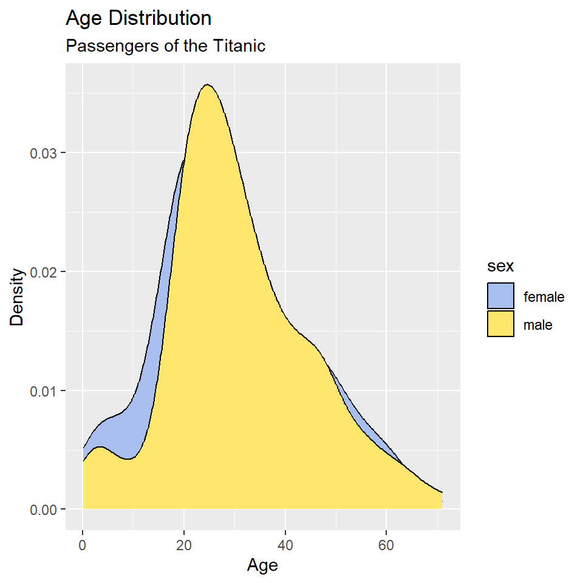
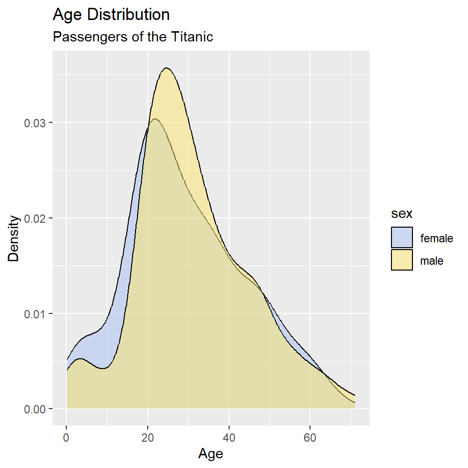
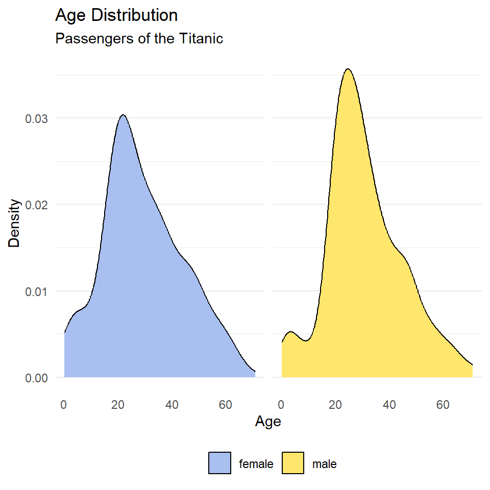
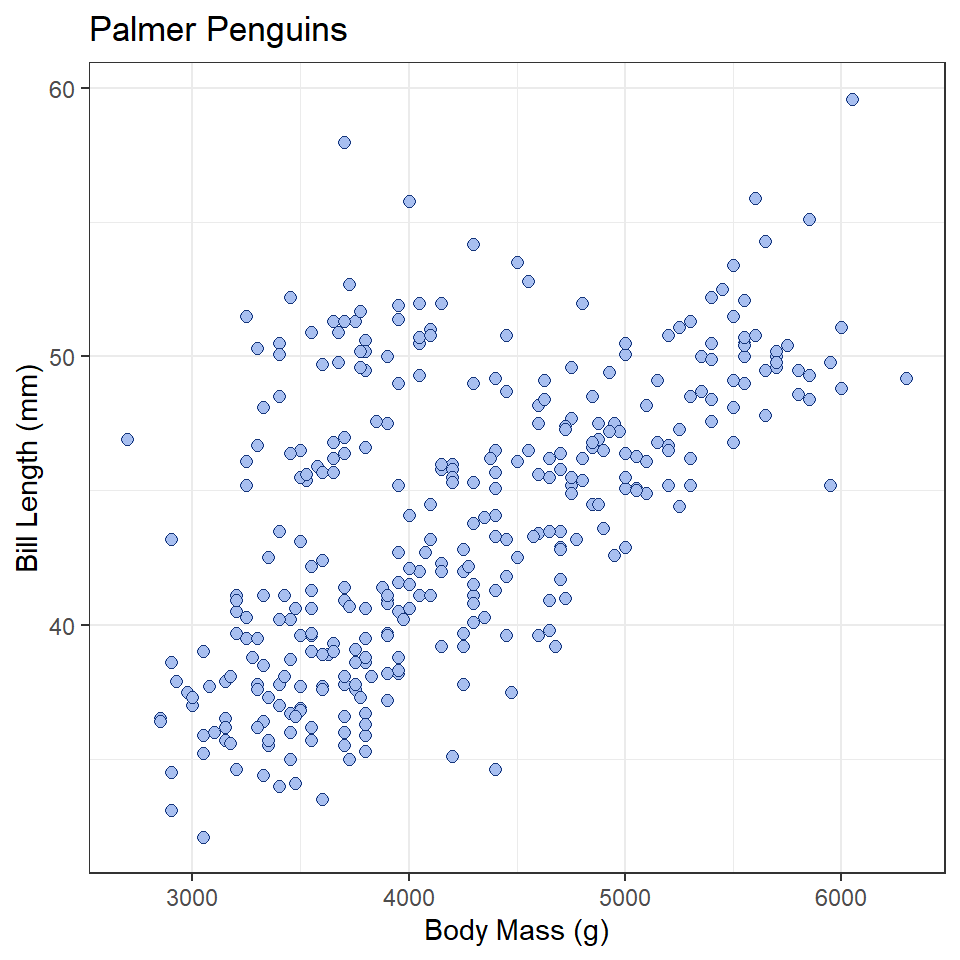

Lab 04: Ordinary Least Squares
Outline
Objectives
This lab will guide you through the process of
R Packages
We will be using the following packages:
Data
-
cars- Includes measurements of car speed and stopping distance.
- package:
datasets - reference: https://stat.ethz.ch/R-manual/R-devel/library/datasets/html/cars.html
-
DartPoints- Includes measurements of 91 Archaic dart points recovered during surface surveys at Fort Hood, Texas.
- package:
archdata - reference: https://cran.r-project.org/web/packages/archdata/archdata.pdf
-
OxfordPots- Includes percentages of late Romano-British Oxford Pottery on 30 sites, along with their distance from Oxford.
- reference: https://cran.r-project.org/web/packages/archdata/archdata.pdf
-
penguins- Includes measurements for penguin species, island in Palmer Archipelago, size (flipper length, body mass, bill dimensions), and sex.
- package:
palmerpenguins - reference: https://allisonhorst.github.io/palmerpenguins/reference/penguins.html
-
titanic- Provides information on the fate of passengers of the Titanic, including economic status, sex, age, and survival.
- package: none
- reference: https://wilkelab.org/SDS375/
- note: we’re going to download this one rather than get it from a package
Indexing tables with base R

It will often be the case that you do not need all the data in a table, but only a subset of rows and columns. To get the rows and columns you want, though, you need to be able to, as it were, point to them or point R to them. Another word for this is indexing.
Let’s start with the use of square brackets, [,]. The basic idea here is that you can take a table and index it by row and column by appending the square brackets to it. The basic syntax is this:
table[row,column]As an example, let’s say we are working with our simple projectile point table:
projectiles <- data.frame(
type = c("Elko", "Rosegate", "DSN", "Elko", "Clovis"),
length = c(2.03, 1.4, 1.9, 2.1, 3.3),
width = c(0.8, 0.4, 0.3, 0.7, 0.95),
height = c(3.23, 2.4, 1.29, 2.7, 4.15)
)
projectiles type length width height
1 Elko 2.03 0.80 3.23
2 Rosegate 1.40 0.40 2.40
3 DSN 1.90 0.30 1.29
4 Elko 2.10 0.70 2.70
5 Clovis 3.30 0.95 4.15And maybe we want the value at the 3rd row and 2nd column, so we’re wanting the length of that particular desert side-notched (or DSN). Here is one way to do that with just the numeric position (or coordinates) of that value:
projectiles[3,2][1] 1.9While we did specify both a row and a column in this example, that is not required.
projectiles[3,] type length width height
3 DSN 1.9 0.3 1.29projectiles[,2][1] 2.03 1.40 1.90 2.10 3.30Did you notice the different outputs? projectiles[3,] returns a data.frame, but projectiles[,2] returns a vector. This is a “gotcha” in R, a little bit of unexpected behavior. The most common situation in which indexing returns a vector from a data.frame is when a single variable is selected. Sometimes getting just the variable is intentional (see below), but other times it is not, so it’s worth being aware of.
We can also subset multiple rows and columns, though this requires that we use vectors of data, and not just single values. A useful tool in this regard is the colon, :, which allows you to create a sequence of integers, starting with the number on the left and proceeding by one to the number on the right.
1:3[1] 1 2 3Now, we can use this syntax to index the last four rows of our table and the first three columns.
projectiles[2:5, 1:3] type length width
2 Rosegate 1.4 0.40
3 DSN 1.9 0.30
4 Elko 2.1 0.70
5 Clovis 3.3 0.95If we want to get rows or columns that are not next to each other in the table, we can use the c() function, as in concatenate.
c(1,2,4)[1] 1 2 4When applied to the projectiles table, we get the following.
Importantly, you can also index columns by name.
projectiles[1:3, c("type", "length")] type length
1 Elko 2.03
2 Rosegate 1.40
3 DSN 1.90One advantage of using names rather than numbers is that it is much more readable as it is not immediately obvious with numbers what columns you are actually selecting. More importantly, though, using names is more robust. Were the length column for whatever reason to move to the right of the height column, its numeric position in the table would be 4, not 2. So, using projectiles[,2] will work to index the length variable only if length is at that position. Using projectiles[,"length"] to index it will work either way, though, regardless of the numeric position of that variable.
So, that’s pretty much the basics of indexing rectangular data with base R. Before moving on, though, let’s talk about one additional thing you might want to do with a data.frame, and that’s extract an entire variable or column. There are two primary ways to achieve this. You can use double brackets, <table>[[<variable>]], or you can use the dollar-sign operator, <table>$<variable>.
projectiles[["type"]][1] "Elko" "Rosegate" "DSN" "Elko" "Clovis" projectiles$length[1] 2.03 1.40 1.90 2.10 3.30Note that you can and often will want to assign these to their own objects, so you can use them again later.
p_type <- projectiles[["type"]]
p_length <- projectiles$lengthAnd, if you want, you can index specific values in the vector as you would rows in the table.
Exercises
- Get the names of the variables in the
penguinstable withnames(). - How many observations and variables are in this dataset? Hint: use
nrow()andncol(). - Try indexing multiple rows and columns of the penguins data using the square brackets with row numbers and column names, for example,
penguins[1:25, c("species", "island", "body_mass_g")]. Try doing this a couple of different ways. - Extract the
bill_length_mmvariable from this table and assign it to an object calledbill_length. Do the same forbill_depth_mmand call itbill_depth. You can use either<table>[[<variable>]]or<table>$<variable>.
Density Plots
Here you will learn how to generate a “density” plot or a plot of the underlying probability density of a variable using ggplot() and geom_density(). This is similar to a histogram in that it seeks to show the distribution of a continuous random variable. It differs, however, in the way it goes about doing that. To see how they differ, let’s first have a look at these two plots of the titanic data. The one on the left is a histogram, the one on the right a density plot.
To be able to work through the examples in this section, you need to run the code below. We’ll explain what this code does in another lab.
titanic <- read.csv("https://raw.githubusercontent.com/wilkelab/SDS375/master/datasets/titanic.csv")

The big difference here is that histograms discretize a sample using bins, counts the number of observations that fall into each bin, and then represents those counts using the heights of the rectangles. A density plot uses a method known as kernel density estimate (or KDE) to estimate the density of each observation and represents it using the height of a smooth and continuous curve. The KDE approach works like this. First, you set each data point as the mean of a distribution, typically the normal or Gaussian distribution (also called the kernel). Each distribution is assumed to have the same varianc eor standard deviation (called the bandwidth), which is set to some arbitrary value. The heights of the kernels are then summed to produce a curve like the one above.
As with the histogram, we specify a density geometry for ggplot using geom_density().
ggplot(titanic, aes(age)) +
geom_density()
Again, we can specify different aesthetics like fill and color and update the labels with labs().
ggplot(titanic, aes(age)) +
geom_density(
fill = "#A8BFF0",
color = "#183C8C"
) +
labs(
x = "Age",
y = "Density",
title = "Age Distribution",
subtitle = "Passengers of the Titanic"
)
We can also map these aesthetics to other variables like the sex of the passenger.
ggplot(titanic, aes(age, fill = sex)) +
geom_density() +
labs(
x = "Age",
y = "Density",
title = "Age Distribution",
subtitle = "Passengers of the Titanic"
)
And, we can change the default fill colors using scale_fill_manual(), too.
ggplot(titanic, aes(age, fill = sex)) +
geom_density() +
scale_fill_manual(
values = c("#A8BFF0", "#FFE66D")
) +
labs(
x = "Age",
y = "Density",
title = "Age Distribution",
subtitle = "Passengers of the Titanic"
)
In this case, however, it’s hard to see where the two distributions overlap, which makes it hard to compare them. One way to fix this is to change the opacity of the fill color using the alpha() function (note that the alpha or transparency of a color can range from 0 to 1.).
ggplot(titanic, aes(age, fill = sex)) +
geom_density() +
scale_fill_manual(
values = alpha(c("#A8BFF0", "#FFE66D"), 0.5)
) +
labs(
x = "Age",
y = "Density",
title = "Age Distribution",
subtitle = "Passengers of the Titanic"
)
This is still a little hard to read, so let’s try faceting instead of alpha. Let’s also drop the background vertical grid lines using the theme() function. At the same time, we’ll go ahead and drop the label “sex” from the legend as that should be obvious from the key. We do that by setting name = NULL in scale_fill_manual().
ggplot(titanic, aes(age, fill = sex)) +
geom_density() +
scale_fill_manual(
name = NULL,
values = c("#A8BFF0", "#FFE66D")
) +
labs(
x = "Age",
y = "Density",
title = "Age Distribution",
subtitle = "Passengers of the Titanic"
) +
facet_wrap(~sex) +
theme_minimal() +
theme(
panel.grid.major.x = element_blank(),
panel.grid.minor.x = element_blank(),
)
Notice that the facet labels are redundant with the legend key here, so let’s remove those, too. We do that by setting the theme arguments strip.background and strip.text to element_blank(). Finally, we can move the legend to the bottom of the plot and make it horizontal with legend.position and legend.direction respectively.
ggplot(titanic, aes(age, fill = sex)) +
geom_density() +
scale_fill_manual(
name = NULL,
values = c("#A8BFF0", "#FFE66D")
) +
labs(
x = "Age",
y = "Density",
title = "Age Distribution",
subtitle = "Passengers of the Titanic"
) +
facet_wrap(~sex) +
theme_minimal() +
theme(
legend.position = "bottom",
legend.direction = "horizontal",
panel.grid.major.x = element_blank(),
panel.grid.minor.x = element_blank(),
strip.background = element_blank(),
strip.text = element_blank()
)
Exercises
- Make a kernel density plot of penguin bill length using
ggplot()andgeom_density(). Then make all of the following changes:- Map penguin
speciesto thefillaesthetic. - Update the axis labels and plot title using
labs(). - Use
scale_fill_viridisto use colorblind safe colors for the fill. Note! Species is a discrete or categorical variable, so make sure to setdiscrete = TRUE! - Use
facet_wrap()to facet byspecies. - Choose a suitable theme, like
theme_minimal(). - Remove vertical grid lines.
- Change the legend position to bottom and make it horizontal.
- Remove strip text and background.
- Map penguin
Bivariate Statistics
Bivariate statistics provide simple measures of the relationship between two variables. Here we will learn how to calculate two such statistics in R: covariance and correlation. These allow us to describe the direction of the relationship (is it positive or negative?) and the strength of the relationship (is it strong or weak?). In this case, we’ll investigate the relationship between penguin body mass and bill length. We’ll be asking this question: Is there a relationship between bill length and body mass? Is it positive or negative?
Before we do that, however, it is useful to visualize our data. Since we are concerned with a potential relationship, we will use a scatterplot, or a cloud of points arrayed along the dimensions of two variables, in this case body mass and bill length.
ggplot(penguins, aes(x = body_mass_g, y = bill_length_mm)) +
geom_point(
shape = 21,
fill = "#A8BFF0",
color = "#15357A",
size = 2
) +
labs(
x = "Body Mass (g)",
y = "Bill Length (mm)",
title = "Palmer Penguins"
) +
theme_bw()
What does this tell you about the relationship between these variables?
Covariance
Covariance provides a measure of the extent to which two variables vary together. The sign of the covariance reflects a positive or negative trend, but not magnitude. To calculate this value in R, use the cov() function.
bill_length <- penguins$bill_length_mm
body_mass_g <- penguins$body_mass_g
cov(bill_length, body_mass_g, use = "complete.obs") # complete.obs means ignore NA values[1] 2606This is a positive number, meaning the relationship between bill length and body mass is positive (the one tends to increase as the other increases). The size of the number by itself is unhelpful, however, and cannot be used to infer anything about the strength of the relationship. That is because covariance is sensitive to the unit of measure. If, for example, we convert body_mass from grams to kilograms, we will get a different covariance statistic.
# convert to kilograms by dividing by 1000
body_mass_kg <- body_mass_g/1000
cov(bill_length, body_mass_kg, use = "complete.obs")[1] 2.61Correlation
To remove units of measure and prevent resulting changes in the magnitude of the covariance, we can scale the covariance by the standard deviations of the samples. The resulting value is known as Pearson’s Correlation Coefficient, which ranges from -1 to 1.
cor(bill_length, body_mass_g, use = "complete.obs")[1] 0.595Just to demonstrate that this isn’t sensitive to units of measure, let’s see what happens when use body mass measures in kilograms.
cor(bill_length, body_mass_kg, use = "complete.obs")[1] 0.595There’s no change! In either case, the resulting coefficient is greater than zero, suggesting a positive trend, but is this value significantly different than zero? To answer that question, we can convert this coefficient to a t-statistic and compare it to a t-distribution. This is done with the cor.test() function. For this test, we have the following hypotheses:
- \(H_0\): the coefficient is equal to zero
- \(H_1\): the coefficient is not equal to zero
And, of course, we must stipulate a critical value. In this case, we will stick with tradition:
\(\alpha = 0.05\)
So, now, here is our test:
cor.test(bill_length, body_mass_g, use = "complete.obs")
Pearson's product-moment correlation
data: bill_length and body_mass_g
t = 14, df = 340, p-value <0.0000000000000002
alternative hypothesis: true correlation is not equal to 0
95 percent confidence interval:
0.522 0.660
sample estimates:
cor
0.595 In this case, you see that \(p < \alpha\), hence we reject the null hypothesis, meaning our coefficient estimate is significantly different than zero. There is, in other words, a significant positive relationship between body mass and bill length among the Palmer penguins.
Exercises
- Using the
penguinsdataset, do all of the following:- calculate the covariance between bill length and bill depth,
- calculate Pearson’s Correlation Coefficient for bill length and bill depth,
- do a correlation test to determine whether the coefficient is significantly different than zero, and
- be sure to state your null and alternative hypotheses, as well as the critical value!
- What does the correlation test tell you about the relationship between bill length and bill depth?
Linear Models
In this section, we will learn how to fit a linear model to our data. We will look, specifically, at a scenario involving an experiment with cars recorded in the cars dataset. We want to know what kind of relationship there is between the distance (in feet) a car travels after the brakes are applied and the speed (in miles per hour) the car was going when the brakes were applied. We will be doing this by fitting a linear model with the lm() function. Here are our hypotheses:
- \(H_0\): there is no relationship between speed and distance.
- \(H_1\): there is a relationship between speed and distance.
Model formula
First, however, let’s discuss the formula syntax that the lm() function uses. You were already introduced to this with the t.test(), but let’s go into a little more detail now. To fit a model, we must first specify a formula. This involves three components: a predictor variable, the tilde ~, and a response variable. The syntax is this:
<response> ~ <predictor> or <dependent> ~ <independent>
In the case of the cars data, that’s:
dist ~ speed
This can be read as saying, in effect, “distance as a function of speed.” Note that you do not have to put the variables in quotes or anything like that. It’s just the names of the variables separated by a tilde.
Model fitting
In addition to specifyfing the formula, we must also tell the lm() function what data set our observations are coming from. We do this by specifying the data argument. The whole function call looks like this:
cars_model <- lm(dist ~ speed, data = cars)
cars_model
Call:
lm(formula = dist ~ speed, data = cars)
Coefficients:
(Intercept) speed
-17.58 3.93 Here, the model estimates a coefficient for both the intercept and the relationship between speed and distance.
Model summary
A more informative report of the model is provided by the summary() function. In addition to reporting on the model coefficients, this will also conduct a t-test on each coefficient, evaluating whether they are significantly different than zero.
summary(cars_model)
Call:
lm(formula = dist ~ speed, data = cars)
Residuals:
Min 1Q Median 3Q Max
-29.07 -9.53 -2.27 9.21 43.20
Coefficients:
Estimate Std. Error t value Pr(>|t|)
(Intercept) -17.579 6.758 -2.60 0.012 *
speed 3.932 0.416 9.46 0.0000000000015 ***
---
Signif. codes: 0 '***' 0.001 '**' 0.01 '*' 0.05 '.' 0.1 ' ' 1
Residual standard error: 15.4 on 48 degrees of freedom
Multiple R-squared: 0.651, Adjusted R-squared: 0.644
F-statistic: 89.6 on 1 and 48 DF, p-value: 0.00000000000149We’ll go over this summary() in more detail later. For now, note that it reports the coefficient “Estimate”, the t-statistic (or “t value”) for each coefficient estimate, and the p-value for the respective t-tests. In each case, the null hypothesis is that the coefficient is zero. A small p-value then gives us reason to reject the null and accept the coefficient estimate as significant. In this case, the p-value is very small, so we can accept both the intercept and speed coefficients. This tells us (as you might expect) that there is a significant positive relationship between the speed the car was going when it applied the brakes and the distance it traveled after applying the brakes.
Exercises
- Using the
penguinsdataset, build a linear model of the relationship between bill length and bill depth. - What are the coefficients reported by this model? Specifically, the intercept and the coefficient of relationship between bill length and bill depth.
- Apply the
summary()function to your model. Are the coefficients significant?
Homework
- Load the following datasets from the
archdatapackage usingdata().DartPointsOxfordPots
- Practice extracting variables from these tables.
- From each, remove one variable and assign it to an object with an informative name.
- Calculate the mean and variance for each variable.
- Using the
DartPointsdataset, make a kernel density plot of dartLengthto visualize its distribution. Make sure to do all of the following:- Map the dart
Name(or type) to thefillaesthetic. - Update the axis labels and plot title using
labs(). - Use
scale_fill_viridisto use colorblind safe colors for the fill. Note! Species is a discrete or categorical variable, so make sure to setdiscrete = TRUE! - Use
facet_wrap()to facet byName(or type). - Choose a suitable theme, like
theme_minimal(). - Remove vertical grid lines.
- Change the legend position to bottom and make it horizontal.
- Remove strip text and background.
- Map the dart
- Using the
DartPointsdataset, calculate the covariance and correlation between dart length and width.- Then conduct a correlation test to evaluate the significance of Pearson’s Correlation Coefficient.
- Be sure to state the null and alternative hypotheses, as well as the critical value.
- Is the coefficient significant?
- What does this mean about the relationship between dart length and width?
- Using the
DartPointsdataset, build a linear model showing the relationship (if any) between the length and width of dart points. Be sure to do all of the following:- To visualize the relationship, make a scatter plot of dart
LengthandWidthusingggplot()andgeom_point(). Hint: your aesthetic mapping should beaes(x = Width, y = Length). - Use the correct formula syntax. In this case, the dependent variable is
Lengthand the independent variable isWidth. - Use
summary()to report the model. - Are the coefficient estimates significant?
- What does this mean about the relationship between the length and width of dart points? Hint: it’s called allometry.
- To visualize the relationship, make a scatter plot of dart
- Using the
OxfordPotsdataset, build a linear model showing the relationship (if any) between the percentage of Oxford Pots found on an archaeological site and the distance of that site from the city of Oxford. Be sure to do all of the following:- To visualize the relationship, make a scatter plot of the proportion of Oxford pots and distance to Oxford using
ggplot()andgeom_point(). Hint: your aesthetic mapping should beaes(x = OxfordDst, y = OxfordPct). - Use the correct formula syntax. In this case, the dependent variable is
OxfordPctand the independent variable isOxfordDst. - Use
summary()to report the model. - Are the coefficient estimates significant?
- What does this mean about the relationship between the proportion of Oxford pots on an archaeological site and distance from Oxford?
- To visualize the relationship, make a scatter plot of the proportion of Oxford pots and distance to Oxford using